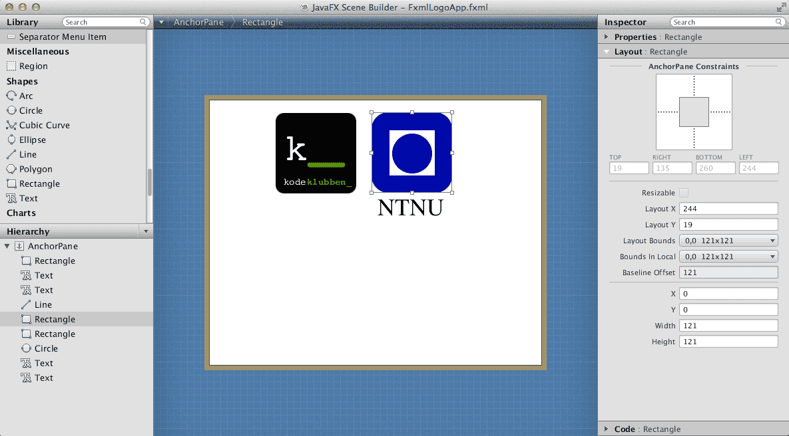

En viktig del av det å lage app-er er å utforme skjerminnholdet, dvs. alt app-en inneholder av grafikk, knapper, lister, osv. Formålet til denne leksjonen er å lære hvordan du kan bruke FXML for å lage skjerminnhold, og to måter å lage slikt innhold. I tillegg skal du lære hvordan du får app-en til å last inn og vise frem innholdet i FXML-filer. App-en er ikke så komplisert, den skal bare vise frem logoene til Kodeklubben og NTNU (eller andre logoer, hvis du ønsker det):
Kodeklubben
NTNU
I leksjonen Hello world lærte du om hvordan du kan lage en app som viste et vindu med et tekst-objekt (av type Text). Da skrev du Java-kode som laget tekst-objektet, satte grafiske egenskaper for tekst-objektet og la det til app-vinduet. Slik kode kan fort bli lang og uoversiktlig, og det kan være vanskelig å skrive kode som har ønsket effekt og se for seg hvordan skjerminnholdet vil bli seende ut.
For å gjøre arbeidet med skjerminnhold enklere, så finnes det en egen kode-type kalt FXML for å lage skjerminnhold. FXML ligner på HTML ved at det bruker XML-elementer, f.eks. <Text...> ... </Text> og attributter, f.eks. fill="blue" for å beskrive innholdet. Når en skal lage FXML-filer, kan en enten redigere FXML som tekst i en egen FXML-editor eller bruke en egen tegne-app som leser og skriver FXML-filer. Vi skal se på begge disse teknikkene i denne leksjonen.
Steg 1: Opprette app-pakke, app-klasse og FXML-fil
Lag først en ny app-pakke og app-klasse som forklart i Hello world-leksjonen. Bruk fxmllogo som navn på pakken og FxmlLogoApp som navn på app-klassen.
Høyreklikk på fxmllogo-pakken og velg New > Other... så du får opp en liste med såkalte veivisere (eng: wizards). Vi skal bruke den som heter New FXML Document. Det enkleste er å skrive inn ‘fx’ i søkefeltet, for å snevre inn utvalget:
Trykk Next for å velge veiviseren. Du vil da få opp følgende skjema:
Fyll inn FxmlLogoApp og trykk Finish. Du vil da få opp en FXML-editor med den nye FXML-fila:
Denne FXML-en gir bare et tomt panel (av typen AnchorPane), så for å få noe å jobbe med, så trenger vi Rediger teksten slik at den blir som følger:
FXML-editoren har samme type kode-komplettering som Java-editoren. Når du f.eks. har skrevet inn <Rect, kan du trykk ctrl-mellomrom og editoren vil både fylle ut resten av Rectangle-navnet og legge til en import-setning øverst i fila (tilsvarende import-setningen i Java):
<?import javafx.scene.shape.Rectangle?>
(Hvis du ikke bruker kode-kompletteringsfunksjonen, så må du skrive inn import-setningen selv.) Tilsvarende kan du bruke kode-komplettering på attributt-navnene layoutX, layoutY, width, height, fill osv.
Mens du redigerer FXML-koden, så kan det være kjekt å se hvordan innholdet vil bli seende ut, når det lastes inn og vises frem. Eclipse har et eget panel kalt JavaFX preview som hele tiden laster inn FXML-koden du redigerer og viser frem innholdet. Dette åpnes ved å velge Window > Show View... og så finne panelet i lista. Bruk søkefeltet for å filtrere lista (skriv ‘pre’, så panelet blir enklere å finne.
Som du ser så inneholder FXML-fila allerede mange av de grafiske elementene som trengs for å lage begge logoene, men ikke alle. Din jobb blir å justere på FXML-koden, så logoene blir omtrent som vist øverst i denne leksjonen.
Litt om FXML
Du har kanskje kjent igjen mange av ordene i FXML-fila fra Java-koden du skrev i Hello world-leksjonen, og det er ikke tilfeldig. Enkelt sagt så tilsvarer elementnavnene i FXML-koden (ordet etter < og </), f.eks. Text og Rectangle Java-klasser, og attributtnavnene tilsvarer egenskaper, f.eks. layoutX, width og fill. Det er også noen elementnavn som tilsvarer egenskaper, f.eks. font. Når FXML-koden blir lest inn, så vil hvert element som tilsvarer en Java-klasse bli til en instans (et Java-objekt) av den klassen, og hvert attributt bli brukt til å sette en egenskap, som om en brukte tilsvarende set-metode. Følgende Java- og FXML-kode betyr omtrent det samme:
Circle circle = new Circle();
circle.setLayoutX(150);
circle.setLayoutY(150);
circle.setRadius(40);
circle.setFill(Color.BLUE);
Noen typer objekter, f.eks. paneler (typene Pane, HBox, VBox og AnchorPane), inneholder andre objekter. I Java-koden må en legge den ene til children-lista til den andre, mens en i FXML legger det ene elementet inni det andre:
Pane pane = new Pane();
Circle circle = new Circle();
...
pane.getChildren().add(circle);
Steg 2: Åpne og redigere FXML-fil med SceneBuilder
Det går greit å bruke FXML-editoren for enkel redigering (eller mer kompliserte ting, når en får erfaring), men det finnes et enklere alternativ, nemlig en grafisk editor kalt SceneBuilder. En kan faktisk åpne og redigere FXML-fila direkte i JavaFX Scene Builder (ofte bare kalt SceneBuilder), siden den bruker FXML som lagringsformat.
Høyreklikk på FXML-fila og velg Openwith SceneBuilder
Hvis du har installer SceneBuilder riktig, så skal du etter litt venting få opp følgende
Som du ser så inneholder panelet i midten de samme grafiske elementene som JavaFX Preview-panelet. Her kan du imidlertid redigere på dem, ved å velge, dra og slippe, som i vanlige tegneprogrammer.
Nederst til venstre ser du trestrukturen av objekter, med et panel (AnchorPane) som inneholder et rektangel (Rectangle), en sirkel (Circle) og to tekst-objekter (Text).
Øverst til venstre ser du en kategorisert liste med elementer som kan dras og slippes inn i redigeringspanelet i midten. I figuren vises bare såkalte Containers, som inneholder andre elementer, men (hvis du scroller) lenger ned finner du bl.a. Controls (interaktive elementer) og Shapes (grafiske elementer). Prøv å finne Line-typen og dra og slipp den litt til høyre for det svarte rektangelet. Hvis du vil endre på hvordan streken ser ut, så kan du redigere ulike egenskaper i panelet til høyre. Prøv f.eks. å gjøre streken tykkere (Stroke Width = 10), endre fargen til grønn (Stroke = #569900) og enden til avrundet (Stroke Line Cap = ROUND). Da skal det se omtrent slik ut:
Dette er omtrent de grafiske elementen du trenger for å lage Kodeklubben- og NTNU-logoene. Prøv å bruke redigeringsmulighetene til å få tegningen til å bli seende omtrent slik ut:

Her er noen tips om nyttige redigeringsfunksjoner som du kan bruke for å få laget og redigert grafikken:
Du kan raskt lage en kopi (duplisere) et element med Edit > Duplicate
Du kan runde av hjørnene på et rektangel ved å endre Arc Height og Arc Width
Når du klikker på Stroke- og Fill-egenskapene, så kommer det opp et nytt vindu med mulighet til å velge farge på flere måter (se under til venstre)
Tilsvarende kan du stille inn navn og størrelsen på font-en til tekst-objekter ved å klikke på Font-egenskapen (se under til høyre)
Valg av farge
Valg av font
Spesielt fin-innstillingen av plassering og dimensjoner kan være vanskelig. Nede til høyre i SceneBuilder-vinduet finner du egenskaper med kategorien Layout, bl.a. koordinater og størrelse. Akkurat hvilke egenskaper du kan endre avhenger av hvilket grafisk element som er valgt. I figuren under ser du hva som kan endre på et rektangel.
Layout-egenskaper
Det er egentlig disse egenskapene du endrer, når du velger, drar og slipper de grafiske elementene og de små hjørne-boksene. Ved å redigere tallene, så kan du styre dem helt presist.
Steg 3: Få appen til å vise frem innholdet i FXML-fila
Det siste trinnet i denne leksjonen er å få app-en til å vise frem det grafiske innholdet i app-vinduet. For å få dette til må du redigere koden i app-klassen din, som du laget i trinn én og heter FxmlLogoApp.
Husk å lagre FXML-fila i SceneBuilder før du går tilbake til Eclipse.
Klikk i FXML-editoren. Den skal da vise frem det nye innholdet, som er resultatet av all redigeringen du gjorde i SceneBuilder.
Det er greit å gjøre endringer rett i FXML-koden i editor. Når du går tilbake til SceneBuilder, så sjekk om du ser de samme endringene der. Hvis ikke så må du kanskje lukke den og åpne den igjen med Openwith SceneBuilder.
Velg editoren med FxmlLogoApp-klassen i (eller åpne den ved å dobbel-klikke på FxmlLogoApp.java) og rediger slik at du får følgende kode:
Trikset her er å lage et FXMLLoader-objekt (første linje i start-metoden, og be denne laste inn FXML-fila med load-metoden (andre linje).
Kjør app-en ved å høyre-klikke på fila eller i editoren og velge Runas > Java Application. Da skal det (etter litt venting) dukke opp et vindu som dette:
Hva har du lært?
lage en FXML-fil med Eclipse sin veiviser
redigere FXML i Eclipse sin FXML-editor.
se forhåndsvisning av FXML-innholdet i JavaFX Preview-panelet
åpne FXML-fila i JavaFX Scene Builder med Openwith SceneBuilder
legge nye elementer til FXML-fila ved å dra og slippe fra SceneBuilder sin paletten
redigere grafiske egenskaper i SceneBuilder
skrive app-kode som laster inn og viser frem FXML-fila i et app-vindu
I leksjonen KalkulatorFX (to be continued) vil du lære hvordan du kan koble FXML-koden til Java-koden og gjøre app-en levende (interaktiv)!